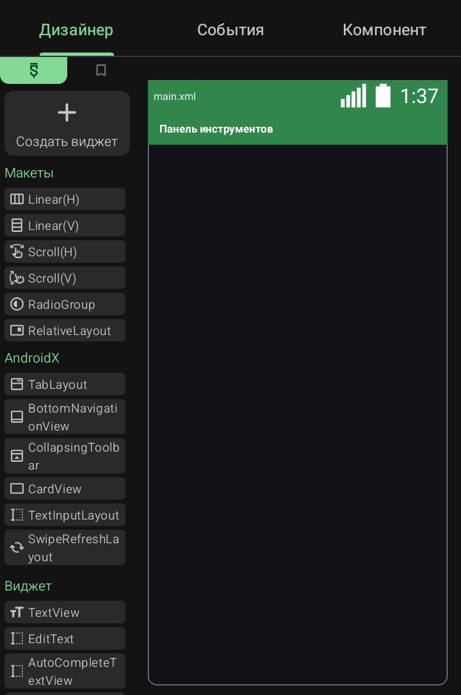
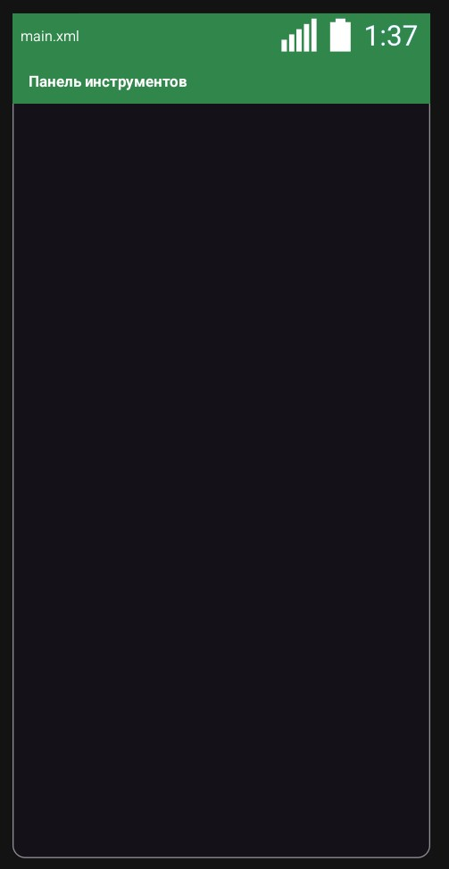
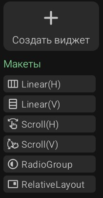
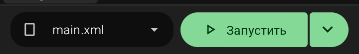
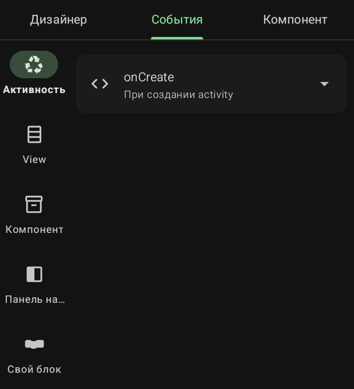

Три вкладки проекта
После создания проекта открывается рабочий экран, в шапке которого находятся три вкладки: «Дизайнер», «События» и «Компонент». Они переключают рабочее пространство проекта между тремя режимами — визуальной разметкой, блочной логикой и подключением сервисов.
Каждая вкладка отвечает за свой слой приложения, но все три работают с одним и тем же проектом одновременно.
· Вкладка «Дизайнер»
- Активна по умолчанию при открытии проекта.

- Здесь строится визуальная разметка экранов: перетаскиванием из левой палитры добавляются виджеты — TextView, Button, ImageView, LinearLayout и другие.
- Справа — рабочая область с текущим макетом (main.xml). На старте там уже есть Панель инструментов — зелёная шапка.

- Сверху слева — кнопка «+ Создать виджет» и категории виджетов (Макеты, AndroidX, Виджеты и т.д.).

- Внизу — селектор файла макета (main.xml) и кнопка «▶ Запустить».

Подробно разбирается в разделе 4 «Дизайнер (View)».
· Вкладка «События»

- Здесь описывается логика приложения — что происходит при нажатии кнопки, запуске экрана, получении данных.
- Слева — меню категорий событий: Активность, View, Компонент, Панель навигации, Свой блок.
- В центре — список уже добавленных событий текущего экрана. На старте есть только onCreate — событие, срабатывающее при создании Activity.
- У каждого события — стрелки < > слева (открыть блочное полотно) и стрелка ∨ справа (развернуть действия: «Сброс» для onCreate).
- Внизу справа — зелёная кнопка «+» для добавления нового события через диалог.
- Сверху в шапке появляется иконка лупы — поиск по событиям.
Что происходит при нажатии на категорию
- Активность — открывается диалог со списком событий жизненного цикла Activity: onCreate, onStart, onResume, onPause, onStop, onDestroy, onBackPressed, onActivityResult, onPostCreate, onSaveInstanceState, onRestoreInstanceState, onCreateOptionsMenu, onOptionsItemSelected, onCreateContextMenu, onContextItemSelected, onTabLayoutNewTabAdded, Import, initializeLogic и другие.
- View — пока пусто с надписью «Нет доступных событий для добавления». Список заполнится, когда во вкладке «Дизайнер» будут добавлены виджеты.
- Компонент — аналогично, пусто до тех пор, пока в третьей вкладке не подключены компоненты.
- Drawer — события бокового меню, пусто до добавления Drawer в проект.
- Свой блок — открывает диалог «Выберите More Block» с полем поиска и кнопками «Отмена» и «Выбрать».
Диалог добавления события
При тапе по кнопке «+» внизу открывается диалог со списком событий выбранной категории. У каждого пункта:
- Слева — стрелка < > (открыть описание).
- По центру — название события и краткое пояснение (например, onCreate — При создании activity).
- Справа — чекбокс для выбора.
- Внизу — «Отмена» и «Добавить».
[Скрин: диалог добавления события категории «Активность»]
💡 Совет: не добавляй события «на всякий случай». Каждое событие, даже пустое, создаёт отдельный метод в коде приложения. Десятки пустых событий — это лишний объём APK и более долгая сборка. Добавляй только те, которые реально будешь использовать.
Диалог «More Block»
Открывается при выборе категории More Block. Содержит:
- Заголовок «Выберите More Block».
- Поле поиска «Поиск…» с иконкой лупы.
- Кнопки «Отмена» и «Выбрать».
При создании нового More Block открывается форма:
- Имя блока — до 60 символов.
- Select Moreblock type — тип возвращаемого значения: Void, Строка, Число, Булев и другие.
- Добавить переменную — выбор типа переменной, поле «Имя переменной», поле «Текст метки», кнопка «+».
- Пользовательский параметр — поле «Параметр», поле «Имя переменной», кнопка «+».
- Внизу — «Отмена» и «Добавить».
Подробно разбирается в разделе 5 «Логика (События)».
· Вкладка «Компонент»
- Здесь подключаются невидимые сервисы приложения — то, что работает в фоне: интернет, база данных, камера, звук, уведомления, реклама, Firebase.
- На старте вкладка пустая — надпись «Нет компонентов для отображения».
- Внизу справа — зелёная кнопка «+» для добавления компонента.
[Скрин: пустая вкладка «Компонент»]
Диалог «Добавить компонент»
Открывается по кнопке «+». Содержит сетку иконок с названиями — всего 24 компонента в трёх категориях.
[Скрин: сетка «Добавить компонент» — верхняя часть]
[Скрин: сетка «Добавить компонент» — нижняя часть]
Категория «Основные» (20 компонентов)
Первый ряд:
- Intent — используется для запуска новой Activity.
- SharedPreferences — хранение простых данных: настройки, флаги, небольшие значения.
- FilePicker — выбор файла из памяти устройства.
- Calendar — работа с датами и событиями календаря.
Второй ряд:
- Vibrator — управление вибрацией устройства.
- Timer — таймер с обратным отсчётом.
- Dialog — всплывающее диалоговое окно.
- MediaPlayer — воспроизведение аудио и видео.
Третий ряд:
- SoundPool — воспроизведение коротких звуков (нажатия, клики).
- ObjectAnimator — анимация объектов.
- Camera — доступ к камере устройства.
- Gyroscope — данные гироскопа.
Четвёртый ряд:
- TextToSpeech — синтез речи (озвучивание текста).
- SpeechToText — распознавание речи (голосовой ввод).
- RequestNetwork — сетевые запросы по HTTP.
- BluetoothConnect — подключение по Bluetooth.
Пятый ряд:
- LocationManager — определение местоположения.
- ProgressDialog — индикатор загрузки с прогрессом.
- DatePickerDialog — диалог выбора даты.
- TimePickerDialog — диалог выбора времени.
Шестой ряд:
- Notification — системные уведомления.
- FragmentAdapter — адаптер для работы с фрагментами.
Категория «Реклама» (2 компонента)
- InterstitialAd — полноэкранная реклама AdMob.
- RewardedVideoAd — реклама с вознаграждением за просмотр.
Категория «Firebase» (6 компонентов)
- Firebase DB — облачная база данных Firebase Realtime Database.
- Firebase Auth — аутентификация пользователей через Firebase.
- Firebase Storage — облачное хранилище файлов.
- PhoneAuth — авторизация по номеру телефона.
- Cloud Message — push-уведомления через Firebase Cloud Messaging.
- Google Login — вход через аккаунт Google.
Категория «Другое» (1 компонент)
- AsyncTask — выполнение фоновых задач.
Диалог настройки компонента
При выборе компонента открывается нижняя панель с его настройками. Например, для Intent:
- Заголовок Intent и иконка компонента справа.
- Описание: «Intent используется для запуска новой Activity».
- Поле «Введите имя компонента» — уникальное имя для использования в логике.
- Ссылка «Читать документацию».
- Кнопки «Отменить» и «Добавить».
После добавления компонент появляется в списке вкладки, а в логике становятся доступны его блоки. В шапке всплывает уведомление: «В редакторе логики добавлены новые блоки».
Удаление компонента
- Тап по стрелке ∨ справа от компонента — раскрывает пункт «Удалить компонент» с иконкой корзины.
- Тап по нему — удаляет компонент из проекта вместе с его блоками в логике.
Подробно разбирается в разделе 6 «Компоненты».
· Общий блок макета внизу экрана (вкладка «Дизайнер»)
В нижней панели вкладки «Дизайнер» слева находится селектор файла макета с иконкой документа и стрелкой ∨ вниз. Тап открывает диалог выбора файла макета с двумя вкладками:
- View — список макетов (main.xml и другие).
- Пользовательск… — пользовательские макеты.
В списке отображаются плитки: main.xml (разметка) и MainActivity.java (логика экрана). Активная плитка выделена зелёной рамкой. Под списком — зелёная кнопка «+ Создать новый view».
Диалог «Создать новый»
При нажатии «+ Создать новый view» открывается форма создания нового экрана:
- Превью макета слева — схема с уже отмеченными StatusBar и Toolbar, плюс опциональные Drawer и FAB.
- Чекбоксы справа: StatusBar, Toolbar, Drawer, FAB. По умолчанию первые два включены.
- Поле «Введите имя» — имя нового экрана.
- Блок «Тип» — переключатель между Активность, Fragment, DialogFragment, BottomSheetDialogFragment.
- Блок «Ориентация экрана» — Портретная, Альбомная, Оба.
- Блок «Настройки клавиатуры» — Не указано, Видимый, Скрытый.
- Внизу — «Отмена» и «Сохранить».
💡 Совет: для первого проекта достаточно одного экрана — MainActivity. Новые экраны добавляй по мере необходимости, чтобы не запутаться в структуре.
Sketchware Pro 7 · Автор: RasNikGal · © 2026